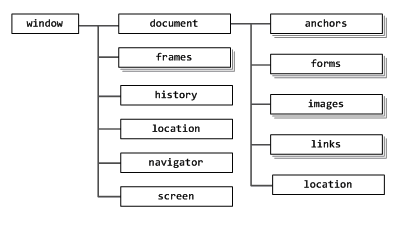
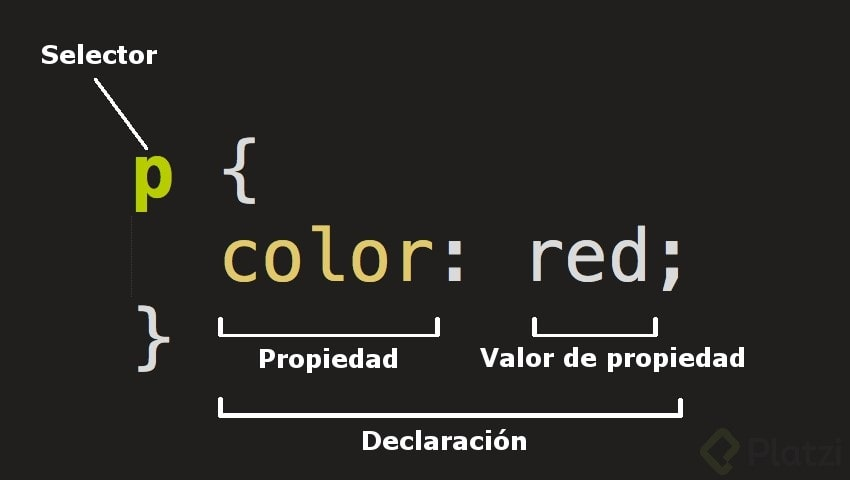
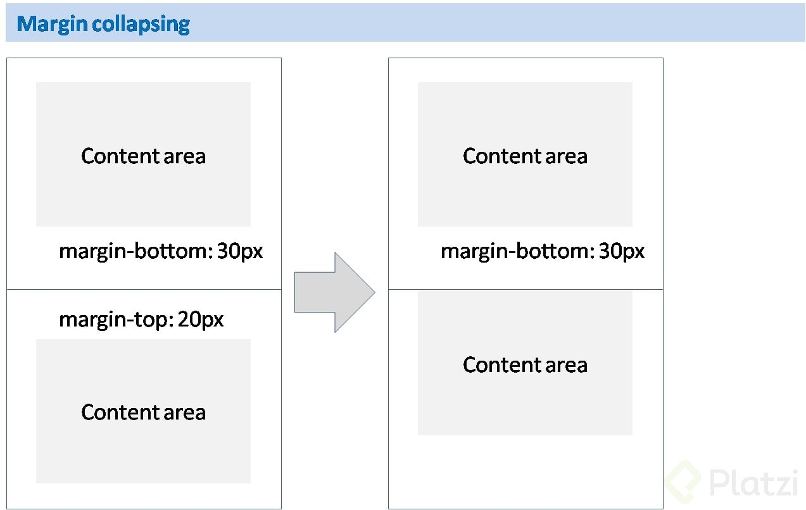
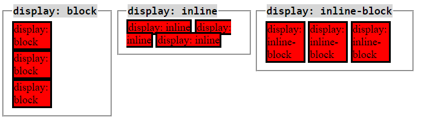
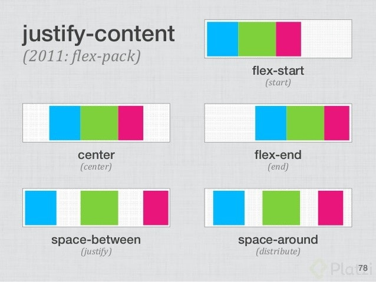

El desarrollo web tiene que ver con todo lo que percibimos a través del navegador: páginas, aplicaciones y
sitios web como Facebook, Instagram y Twitter.
Para comprender cómo funciona internet necesitamos conocer tres grandes conceptos:
Clients (clientes): son los dispositivos a través de los cuales accedemos a
los sitios
web: un computador desktop, un teléfono, una laptop, etc.
Internet: es toda la red formada por servidores y clientes que proveen y
consumen
contenidos web y se comunican entre sí a nivel global.
Server (servidor): es un computador, ubicado en alguna parte de la red, que
está
prendido todo el tiempo, en el que se alojan o almacenan sitios web y sus recursos y al cual se accede a
través de nombres de dominio (.com, .net, .pe, etc.). También se les conoce como hosting.
Profesiones dentro del Desarrollo Web:
Frontend: son los encargados de cuidar toda la apariencia y experiencia de
usuario. Su
misión es pasar todo el diseño gráfico de un sitio o aplicación web, a código, y proveer toda la
interactividad a los clientes. Esta rama se puede subdividir en algunas especializaciones como:
Arquitecto Frontend, Desarrollador JavaScript (frontend), etc.
Backend: resguardan los datos y la seguridad de las aplicaciones y sitios
web. Su
misión es crear y mantener toda la parte del sitio web que sucede en los servidores. Pueden
especializarse aún más en: SysAdmis, DevOps, Desarrollador JavaScript (backend), entre otros.
Las tres tecnologías básicas que debe conocer y manejar un Frontend son:
html: es el lenguaje de marcado para hacer websites.
css: hojas de estilos cascada, el diseño hecho código.
JavaScript: es el único lenguaje que funciona actualmente dentro de los
navegadores de
manera nativa.
Como funciona internet
Hypertext Markup Language (html)
Languaje de marcado para hacer websites. Determinar el contenido: texto, imágenes, videos, enlaces, etc.
Cascade Style Sheet (css)
Lenguaje para definir la presentación de documentos html.
Flujo de estudio de un Arquitecto Frontend
Recomendado por Leonidas (tutor de platzi)
La herramienta fundamental para el desarrollo web es el Editor de Código. Existen varias opciones entre
las que destacan: SublimeText
, Atom y Visual Studio Code.
Los editores de código se pueden configurar y personalizar para ofrecer una mejor experiencia al
desarrollador.
Document Object Model (dom)
Modelo de documento es español, es la manera en que se representa el contenido del documento, de manera
similar a un árbol de nodos.
A continuación, un ejemplo sencillo de la estructura del DOM:
html
head
title
meta
body
header
nav
section
article
footer
Nota: El BOM se enfoca en el navegador
mientras que el DOM
en el HTML .
 Estructura
del bom. Estructura
del dom.
Etiquetas
Cada etiqueta tiene una determina función.
Las etiquetas son la representación básica de la información en un documento html. Sirven para crear y
organizar el contenido.
La sintaxis general de una etiqueta es:
<nombre> contenido </nombre>
Algunas de las etiquetas más conocidas y usadas son:
Etiquetas del cuerpo del documento (body).
doctype: indica al navegador el tipo de documento que se está
mostrando.
html: es la etiqueta que envuelve todo el documento.
head: es la cabecera del documento y contiene sub etiquetas que
describen al documento o incluyen
recursos adicionales
Etiquetas de cabecera (head).
article: diferencia partes del contenido que pueden vivir por sí
mismas.
nav: para hacer menús de navegación.
aside: contenido menos relevante, como publicidad, etc.
section: sirve para diferenciar las secciones principales del
contenido.
header: cabecera del documento.
footer: pie de página del documento.
h1 - h6: títulos de nuestro sitio web.
table: tablas de contenidos, similar a la estructura de las hojas de
cálculo.
ul y ol: listas de items.
div: cualquier división para organizar el contenido.
article: es la parte de nuestro contenido que puede vivir por sí mismo.
Pueden haber tantos artícle
como proyectos o eventos tenga nuestro portafolio.
p: define el texto de un párrafo.
small: aplica una apariencia de texto reducido en tamaño.
strong: aplica al texto un formato de negritas.
a: corresponde a un ancla o enlace a una url interna o externa del
documento.
img: con esta etiqueta podemos enlazar imágenes en el documento.
figure: le da un contexto semántico a las imágenes.
Notas:div(personalizar secciones de elementos)
span(personalizar líneas de
texto).
Atributos en html.
Los atributos son valores agregados a las etiquetas (tags) html que extienden su habilidad o funcionalidad
con información específica.
A continuación, un ejemplo de los atributos más comunes y usados en algunas etiquetas:
Para img:
src: específica la ruta de la imagen que será mostrada a través de esta
etiqueta. La
ruta puede ser absoluta (cunado especifica una dirección exacta, incluyendo el prefijo http(s) ) o
relativa (cuando la referencia a la ubicación de la imagen parte de la ubicación del archivo actual).
alt: indica un texto alternativo que será mostrado en lugar de la imagen
cuando ésta
no pueda ser mostrada.
width: ancho de la imagen en pixeles.
height: alto de la imagen en pixeles.
Para link, en la cabecera head del documento:
rel: indica la relación del recurso con el contenido.
type: indica el tipo de recurso / formato.
href: indica la ubicación (url) del recurso enlazado.
Para meta , ambién en la cabecera head del documento:
charset: indica la tabla de caracteres (utf-8 para caracteres latinos)
usada en el
documento.
Para a:
href: la ubicación o ruta a la que enlaza esta etiqueta de ancla. En el
caso de querer
enlazar a elementos que se encuentran dentro del mismo documento, este atributo debe indicar el valor del
atributo "id" de ese elemento destino del enlace.
Formularios
Los Formularios en html son unidades de información que nos permiten recolectar información para enviarlos
al propietario del website o a un servicio externo. Está formado por dos partes o contextos: una parte
donde se hace el ingreso y modelación de esos datos (en el frontend), y otra parte que se encarga de
enviar, procesar y almacenar esos datos (en el backend).
Los formularios se crean con la etiqueta form . El atributo principal de un
formulario es
action, ya que
contiene la ruta a la que serán enviados los datos recolectados.
Hay diversos elementos html que permiten la captura o recolección de datos, aunque generalmente se usan los
elementos creados con la etiqueta input. Los inputs también sirven para crear botones, aunque existe
una
etiqueta especial para ésto llamada button. El atributo principal de los inputs es type, que
indica el tipo
de comportamiento o dato que se espera recibir.
Los elementos creados con la etiqueta label muestran un texto que se puede asociar con un input para
darle
mayor significado al campo, principalmente cuando no se usa el atributo placeholder.
Formas de agregar estilos a html
Hay tres opciones para incluir estilos que definan la apariencia de tu html:
Estilos en línea: se definen directamente en el elemento html que quieres
estilizar, se agregan con el atributo style .
Estilos con el tag Style: regularmente este tag se incluye dentro de la
etiqueta head del html.
Estilos enlazados desde un archivo css externo: utilizando la etiqueta
link que nos permite enlazar recursos externos.
A CSS , se le llama hojas de estilos en cascada
porque los estilos que se definen para una página se van
aplicando de arriba hacia abajo, y de lo más general a lo más particular, teniendo prioridad lo más
particular. Esto es, los estilos que prevalecen son los que han sido definidos en
línea, luego los que
fueron definidos mediante la etiqueta style en la cabeza o cuerpo del html, y
por último los estilos
definidos en archivos externos enlazados con la etiqueta link . Esta prioridad
se puede alterar al usar el
modificador !important en la definición de algún estilo en particular, aunque esto no es recomendado.
Reglas, selectores, declaraciones, propiedades y valores de CSS

Los estilos incluidos por el navegador
Los navegadores incluyen estilos predeterminados para cada elemento html. Esto significa que aun cuando no
hayas definido o asignado ningún estilo a tus etiquetas, éstas tendrán una apariencia particular que es muy
similar en todos los navegadores, aunque no necesariamente idéntica.
Agregando clases a los componentes escritos en HTML
Para aplicar estilos a los componentes html, lo más común y recomendable es hacerlo a través de clases que
se asignan al elemento html mediante el atributo class.
Un elemento html puede tener varias clases, se deben indicar en el mismo atributo class
pero separadas por
un espacio en blanco.
Al escoger los nombres de clases, debemos tener en cuenta que se pudieran aplicar a muchos elementos, o a
elementos particulares, así que la claridad y precisión en su identificación facilitará la
contextualización y mantenibilidad en el futuro.
<pclass="mensaje" >Este es un parrafo al que se le asigna la clase mensaje, para despues agregarle estilos con css.</p>
Unidades de medida y colores
Hay varias unidades de medida con las que se puede trabajar en css : %, em, rem, px, pt, fr, vw, vh
Las medidas más comunes y utilizadas son los pixeles. Un pixel es la menor unidad homogénea en color que
forma parte de una imagen digital. Es la unidad más práctica y fácil de utilizar y manipular.
Los colores en CSS pueden ser representados de al menos tres formas diferentes:
Representados con palabras claves para cada color, como: red, green, blue,
pink, yellow, black, etc.
Usando la composición de tres colores (rojo, verde y azul): para esto
podemos usar notación exadecimal o las funciones rgb() y rgba().
Usando la composición mediante valores de Matiz, Saturación y Luminosidad
con: hls() y hlsa().
Con respecto a los valores hexadecimales, cada color está representado por 6 dígitos, que representan 3
pares de hexadecimales: FF - FF - FF (rojo, verde y azul), en el que cada par puede tomar valores
hexadecimales entre 00 y FF. Cada uno equivale a valores decimales entre 0 y 255, donde 0 es la ausencia de
ese color y 255 la mayor cantidad disponible. De esta manera cada color se forma por la combinación de
diferentes proporciones de rojo, verde y azul.
#000000 es equivalente a Negro.
#FF0000 es equivalente a Rojo.
#00FF00 es equivalente a Verde.
#0000FF es equivalente a Azul.
#FFFFFF es equivalente a Blanco.
px Es la menor unidad homogénea en color que forma parte de una imagen
digital.
Textos
Los tipos de texto, también conocidos como tipos de letras o fuentes,
son el conjunto de diseños
tipográficos que representan a cada una de las letras y los caracteres gráficos
en el documento. Su nombre
correcto es tipografía. Los diferentes tipos de fuente están basados en archivos que existen en cada
sistema operativo.
Algunos ejemplos de tipos de texto o fuentes son:
Arial
Times New Roman
Verdana
DeJaVu
Lato
OpenSans
Roboto
CSS permite utilizar fuentes diferentes a las disponibles en el sistema
operativo del cliente, mediante la
importación o el enlace a archivos de fuentes externas. Las más usadas son las que están disponibles a
través del sitio web de Google Fonts.
Al definir el tipo de texto asociado a una clase css con la propiedad font-family
indicamos al navegador,
que debe intentar usar esa fuente en particular para darle la apariencia tipográfica a los textos de ese
elemento html.
Propiedades de los textos
Además de todas las propiedades comunes que comparten los elementos estándar de html, como: display,
position, margin, padding, top, left, right, bottom, border, etc., los elementos que admiten contenidos
textuales aceptan una serie particular de propiedades entre las que se encuentran las siguientes:
font-family: define el tipo de fuente aplicado al texto.
color: define el colore del texto.
line-height: define la altura desde la base del texto hasta la base de la
siguiente línea de texto.
font-size: define el tamaño del texto, admite cualquiera de las unidades de
medida disponibles.
letter-spacing: define el espaciado entre las letras del texto.
font-weight: define el "peso" de la letra, negrita, normal, light y
normalmente se indica en múltiplos de 100 o usando keywords.
text-decoration: define el decorado del texto como subrayado, tachado, con
subrayado superior, etc.
text-transform: permite transformar el estado de mayúsculas / minúsculas en
el texto, usando uppercase para mayúsculas sostenidas, lowercase para minúsculas sostenidas, etc.
font-style: para modificar el estilo de la fuente.
Backgrounds
Algunas de las propiedades de css relacionadas con la apariencia del fondo de los elementos son:
background: con la que se puede indicar un color, o usada de manera
extendida, puede incluir color de fondo, url de la imagen, posición y modo de repetición de la imagen.
background: #FFFFFF url('imagen.jpg') left no-repeat;
background-image: contiene la url que se usará como fondo del elemento.
background-image: url('imagen.jpg');
background-color: indica el color de fondo, se puede usar en combinación
con la imagen.
background-color: #d8d8d8;
background-size: se puede indicar en valores de alto y ancho o en alguna de
las palabras claves permitidas: cover o contain.
background-size: /*width*/ 100% /*height*/ 40%;
background-position: indica la posición de la imagen dentro del elemento,
puede indicarse en unidades o en palabras claves como center, left, top y right.
background-position: center;
background-repeat: indica el método de repetición de la imagen de fondo,
puede ser: repeat, repeat-x, repeat-y o no-repeat.
background-repeat: no-repeat;
Bordes, Márgenes y Rellenos
Bordes
Todos los elementos html admiten la propiedad de css border, que define la
apariencia que tendrá el
contorno del componente.
El borde puede ser de muchos estilos, y al igual que las propiedades margin y padding que aprenderás más
adelante, a los bordes se les puede colocar estilos tanto de forma general con la propiedad border, como de
acuerdo al lado del elemento que se indique: border-top, border-right, border-bottom y border-left.
Con la propiedad boder-radius se define el redondeado de las esquinas de los
bordes.
none
dotted
dashed
solid
double
groove
ridge
inset
ouset
Para asignar un borde:
border: tamaño tipo color
Para asignar el borde solo en una parte podemos usar:
border-top
border-right
border-bottom
border-left
Para redondear el borde
border-radius: tamaño;
Márgenes
Los márgenes en CSS son el espacio que separa a los elementos html entre sí. Hay elementos de html que
traen márgenes predefinidos (por defecto) en los estilos propios del navegador como el caso de: body, h1,
h2, h3, h4, h5, h6, ol, ul, li, p, y muchos otros.
Cuando hay dos márgenes de elementos diferentes que colindan entre sí, se presenta una situación llamada
"margin collapsing" en la que el mayor margen de los dos se superpone al otro.
Se puede asignar una medida de margin para los cuatro lados del elemento, o márgenes individuales para cada
uno de los lados con: margin-top, margin-right, margin-bottom y margin-left.
Nota: Se puede centrar un elemento html colocándole el valor de margin:
0 auto, cuando dicho elemento tiene display block.
 Ejemplo de margin collapsing
Rellenos
Así como el margen separa a los elementos html entre sí, la propiedad padding
de relleno, permite definir
una separación entre el contenido interno y el borde de un elemento.
Al inspeccionar los elementos html en el navegador, se puede apreciar el margin con color naranja y el
padding con color verde.
Una forma de identificar cuándo es mejor usar margin o padding en un elemento, es evaluando la necesidad de
usar borde o background, ya que son éstos: el borde y el background, los que realmente diferencian el uso
de uno u otro.
Modelo de cajas
El modelo de caja es un concepto teórico de css que representa a cada elemento html en base sus
propiedades de: margin, border, padding y dimensiones
(alto y ancho).
Para visualizar un elemento html en su representación como modelo de caja debemos irnos a la parte baja de
la sección styles del inspector de elementos, o en la sección llamada Computed.
En el modelo de caja, el ancho total de un elemento html equivale a la
sumatoria de los valores de: width, padding-left, padding-right, border-left-width,
border-right-width. De manera similar aplica para el alto
total de cada elemento. Aunque margin-left y margin-right,
forman parte del modelo de caja, no se incluyen
para el cálculo del ancho total.
Con la propiedad box-sizing, y en particular con el valor border-box
de esta propiedad, podemos modificar
el comportamiento del modelo de caja para que nuestro elemento nunca supere el tamaño máximo que le hayamos
definido en width y height. Esta es la opción recomendad para trabajar.
Tipos de display
Display es la propiedad de css que indica cómo debe ser mostrado un elemento html. Todos los elementos
tienen algún tipo de display. Si un elemento no se ve en pantalla es porque seguramente su display es none.
Los valores más comunes que puede recibir la propiedad display son:
block: el elemento intenta abarcar todo el ancho posible.
inline: reduce su tamaño exclusivamente hasta lo que abarca su contenido,
descartando las propiedades width y height.
inline-block: combina lo mejor de block e inline, ya que respeta las
dimensiones indicadas en las propiedades width y height, pero coloca el elemento en línea (al costado) de
elementos hermanos que también tengan display: inline o inline-block.
flex: asume algunas propiedades por defecto que favorecen la alineación de
los elementos internos.
grid: similar a flex, asume algunas propiedades por defecto organizando los
contenidos en filas y columnas.
none: oculta el elemento.

Propiedad flexbox
Flexbox se refiere al tipo de display en css que permite un manejo flexible de la alineación,
dimensionamiento y distribución de elementos html.
Esta propiedad se aplica a un elemento padre, pero va a afectar principalmente a sus elementos hijos
directos. Por defecto, los elementos internos quedan alineados unos seguidos de los otros. El
comportamiento del modelo de caja de estos elementos hijos también se ha modificado, ya que pierden el
efecto de su propiedad margin.
Los elementos hijos de un padre con propiedad display: flex tienen a su
disposición algunas nuevas
propiedades que aportan mayor flexibilidad a su comportamiento. Una de estas propiedades es flex-shrink
que, junto a la propiedad flex-wrap del padre, permite adaptar y distribuir los
elementos de manera
dinámica en el espacio horizontal disponible hasta ocupar todo el espacio, y luego pasar a ocupar
dinámicamente las siguientes filas hacia abajo.
Propiedades flex en el padre:
flex-direction: column (una sola columna) que los elementos se posicionen
verticalmente.
flex-wrap: que los elementos cuando no halla espacio en el ancho designado
se posición debajo o no.
flex-wrap: nowrap (no cae).
flex-wrap: wrap (si cae).
flex-wrap: nowrap / wrap / wrap-reverse;
Propiedades flex en los hijos:
flex-shrink: capacidad de encogimiento, cuando se quiere que los hijos de
flex no cambien su ancho.
flex-shrink: 0 - 1 (100% encogible).
flex-shrink: 0 (nada encogible).
flex-shrink: 1 / 0;
align-self: Aplica propiedades de alineación a los hijos de flex.
Alineando elementos de forma horizontal
La propiedad de css que nos permite definir la forma en que se alinearán o distribuirán los hijos de un
elemento al que se le ha asignado un display flex es: justify-content. Y puede
tomar entre otros valores,
los siguientes:
flex-start: para alinear todos los elementos hacia el inicio del espacio
disponible.
flex-end: para alinear todos los elementos hacia el final, a la derecha.
center: para alinear todos los elementos al centro del espacio disponible.
space-between: para distribuir los elementos con un espacio proporcional e
igual entre ellos.
space-evenly: para distribuir los elementos con un espacio proporcional e
igual entre ellos (incluyendo el primer y último elementos con respecto a los estremos del espacio
disponible).
space-around: similar a space-evenly pero tanto en el primero como en el
último elemento, el espacio hacia los extremos es la mitad del espacio usado entre los elementos.

Alineando elementos de forma vertical
Similar a como sucede con justify-content, es posible alinear y distribuir los elementos internos en el
espacio vertical disponible usando la propiedad align-items, que puede tomar
también los valores de:
flex-start, flex-end y center.
Algo que es muy importante y se debe tener en cuenta a la hora de usar align-items
y justify-content es que
dependiendo de la propiedad flex-direction que se haya definido, el efecto de
ambos se invierte, no en
cuanto a sus elementos internos, sino en cuanto a si se debe usar uno u otro de manera vertical u
horizontal.
IMPORTANTE: Cuando la propiedad flex-direction se ha definido como column,
la propiedad justify-content ya
no va a aplicar sobre la alineación horizontal, sino sobre la vertical. Y align-items
ya no aplicaría sobre
la alineación vertical sino la horizontal. Se intercambian sus efectos.
Para centrar completamente los elementos internos de manera vertical y horizontal en su elemento padre,
debemos usar el valor center en ambas propiedades.